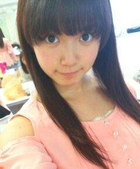
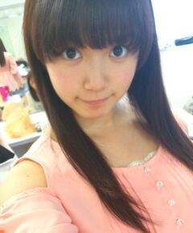

| 2013/07 05 Fri | ひめたん大図鑑52(2012年4 月) |
こんばんわーすー
全握の詳細が発表されてましたが...
レーン抽選ですねー♪どきどき。
今日はtypeB「扇風機」！
アンダー楽曲ですっ
レゲエ調ってゆーんですかね
ガルルとはまた違った
夏ソングになってます( ^ω^ )
扇風機に向かって あー ってしたくなる曲！
レコーディングの時は私たちも
扇風機の向こうにマイクあって
あー ってやったんだよー
MVはねー雨にうたれたりしたんだけど
もうね結構冷たかったでっすっんふふ
愛未とボール遊びしてたりするので
よかったらさがしてみてー
あーそれから台所で宿題もしてますー
ひめたんてね鉛筆の持ち方おかしいんだけど
カメラ回ってる間はちょっと意識して
直してみたりしたんだよー
あっそうそう、
今回MVでは初のフロントポジションを
つとめさせていただきましたっ( ;ω; )！
万理華とかあしゅりーとかるんるんとか
めちゃめちゃ喜んでくれて。
まあライブパフォーマンスの時は
またちょっと違ったりするんですが
とりあえずいつもより
写していただいてると思うので( ;ω; )
みてねー

前回は大図鑑の説明を
すっかり省きました(´・ω・｀)
ひめたん大図鑑とは何か。それは、いわゆる
「過去の質問返しをまとめたもの」って
感じかな。
過去なので時制とかおかしなことになる質問も
中にはあるかもだけど、
ま、そゆことなんでねー
全握の詳細が発表されてましたが...
レーン抽選ですねー♪どきどき。
今日はtypeB「扇風機」！
アンダー楽曲ですっ
レゲエ調ってゆーんですかね
ガルルとはまた違った
夏ソングになってます( ^ω^ )
扇風機に向かって あー ってしたくなる曲！
レコーディングの時は私たちも
扇風機の向こうにマイクあって
あー ってやったんだよー
MVはねー雨にうたれたりしたんだけど
もうね結構冷たかったでっすっんふふ
愛未とボール遊びしてたりするので
よかったらさがしてみてー
あーそれから台所で宿題もしてますー
ひめたんてね鉛筆の持ち方おかしいんだけど
カメラ回ってる間はちょっと意識して
直してみたりしたんだよー
あっそうそう、
今回MVでは初のフロントポジションを
つとめさせていただきましたっ( ;ω; )！
万理華とかあしゅりーとかるんるんとか
めちゃめちゃ喜んでくれて。
まあライブパフォーマンスの時は
またちょっと違ったりするんですが
とりあえずいつもより
写していただいてると思うので( ;ω; )
みてねー

前回は大図鑑の説明を
すっかり省きました(´・ω・｀)
ひめたん大図鑑とは何か。それは、いわゆる
「過去の質問返しをまとめたもの」って
感じかな。
過去なので時制とかおかしなことになる質問も
中にはあるかもだけど、
ま、そゆことなんでねー

1071
 2ndにもメンバーの映像が入るってほんと?
2ndにもメンバーの映像が入るってほんと?
運営さんはうそなんかつきません(^ω^)!斯うご期待!
1072
ひめたんの家族はみんなシーフード無理なん??それともひめたんだけ??
ひめたんだけだねー。
ままはシーフード大好きなのにアレルギーなの('・・`)
1073
47都道府県の中で、どこに行ったことありますか?どこの県が好きですか?
千葉、埼玉、東京、神奈川、静岡、愛知、富山、滋賀、大阪、京都、岡山、鳥取、島根、山口、福岡。
1074
3年生の担任はどんな人でしたか?
体育科の女の先生!
今でもたまに連絡してくれます。
活動したり東京で受験したり、中元さん面倒な生徒だったんですよね。
でも最後まで支えてくれた素敵な先生です☆
1075
質問したらどのくらいたったら答えてくれるの??
う...ごめんなさい...。
できるだけタイムリーに答えられるよう努めます(ノω・`)しばしお待ちをー☆
1076
ひめかの名前の由来ってなんですかーーっ!
1077
日芽香の名前の由来は?
1078
日芽香ってご両親がどういった思いがあったのかぁと...
1079
日芽香と名付けたのは誰ですか?由来を教えて下さい
ひめたんが生まれた日の病院の窓から見た景色
◎日 暖かいお日様
◎芽 桜の花びらからのびる新芽
◎香 風に散る桜の花の香り
のような女の子に育ちますようにという意味が込められているそうです。
まま、ありがとーうっ
1080
同じ誕生日のひめたん、その日は誰と誕生日を過ごしますか?
わーおめでとうございます!
ひめたんは学校にも行くしめんばーにも会う予定。
お互いにとって素敵な日になりますように☆
1081
あみみのモノマネって前にミタパンブーでやってたやつだよね!
大阪の個握でリクエストしていい?
んー正確に言うとね、あみあみ(能條愛未chan)がひめたんの物真似をするんだけどね(ω)♪
この前の撮影の時は「ひめたんの物真似をするあみあみの物真似」をしたの。それ今度やりましょか(^^)??
1082
1日だけ他のアイドルになれるとしたらどこのグループになってみたい
ももクロZさん!
脳震盪起こすくらいに踊り狂ってみたい!!!
1083
同い年な人ってどう??ww
勝手に親近感(*^^*)ふふふ
1084
次の個別でやってみたい髪型とかある?
どうしよかなー(ω)考えてなかった。いっつもその日の気分だからなー。何かリクエストありますかー??
1085
休みの日は何してるの?
お散歩、読書、ぶろぐの質問まとめ、こんなかんじですかね(∀)☆
1086
最近観たい映画あるのかな?
最近ゆーか前からずっとなんだけど、ひめたん3Dメガネかける映画見たことないんよ!
時代に置いてかれるーいややぁ(ノω;`)
1087
ファンレ出したいんだけど、特別に書き足して欲しいこととかあるかな??
1088
まだ握手したことないけどお手紙書いてもいい?
お手紙好きよ＼(^O^)／中身はおまかせいたしますよ♪♪
中身?お弁当みたいなニュアンスね。
ちゃんと読むけーね。
今度いつ会社行くかわからんけちょっと時間かかるかもだけどちゃんと読むけ。ありがとーう!!!
コウモリよ 歌い分けどこー？って
コメントがたくさんありましたが、
当ててみてー♪るん
(＊´・ω・＊)
コメント(129)
2013/07/05 20:24